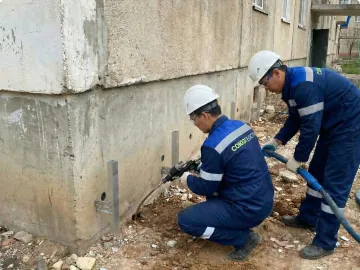

Усиление фундаментов и устранение осадок
Устраняем причину просадки, а не её следы. Восстанавливаем несущую способность основания под существующим фундаментом и возвращаем конструкцию в проектное положение - без вскрытия котлована и остановки эксплуатации здания.